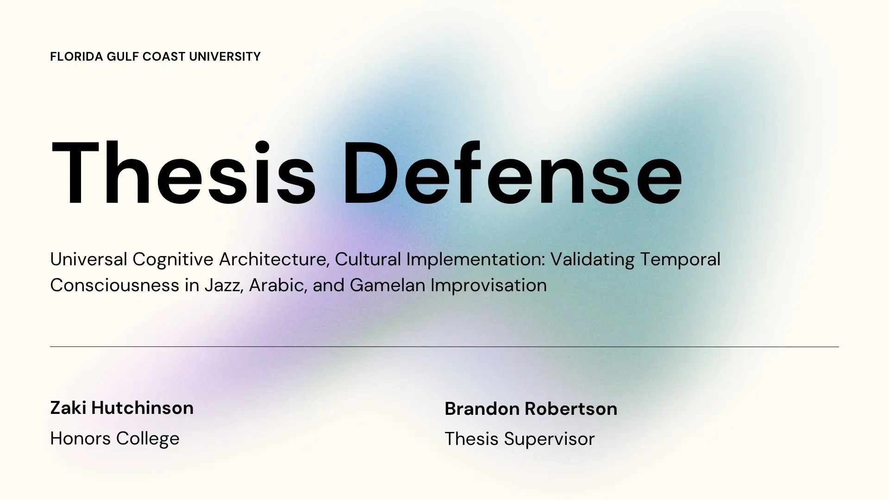

Temporal Consciousness in Musical Improvisation
Comparative analysis examining universal cognitive architecture across jazz, Arabic maqam, and Javanese gamelan traditions using Bjerstedt's temporal consciousness framework.
- Cross-cultural methodology
- Pedagogical framework design
- Assessment rubric creation